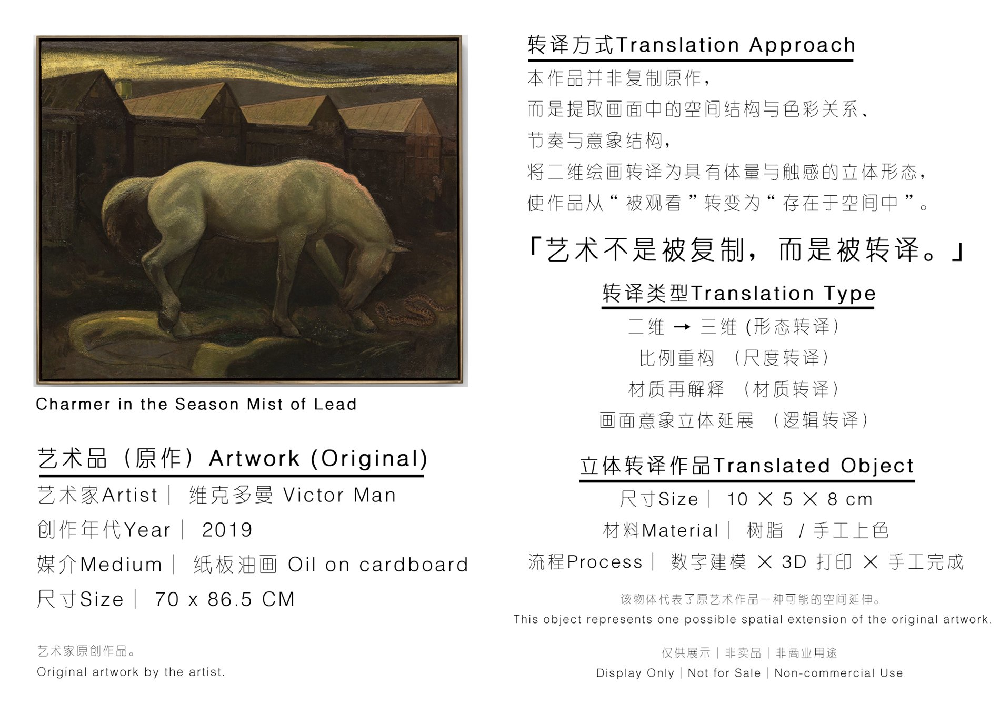
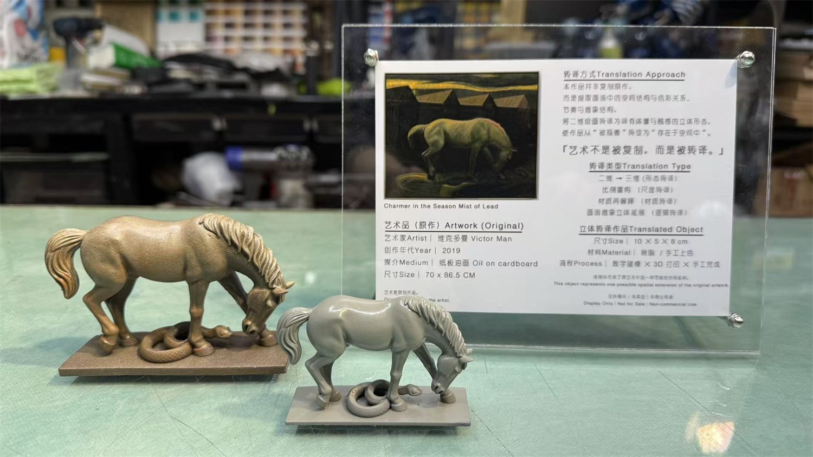
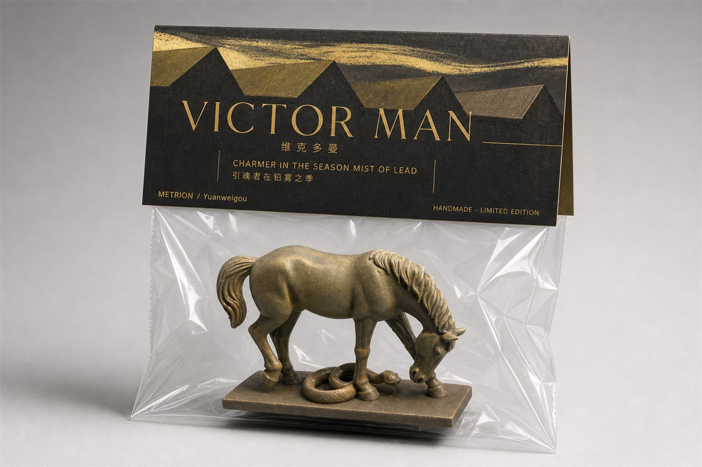
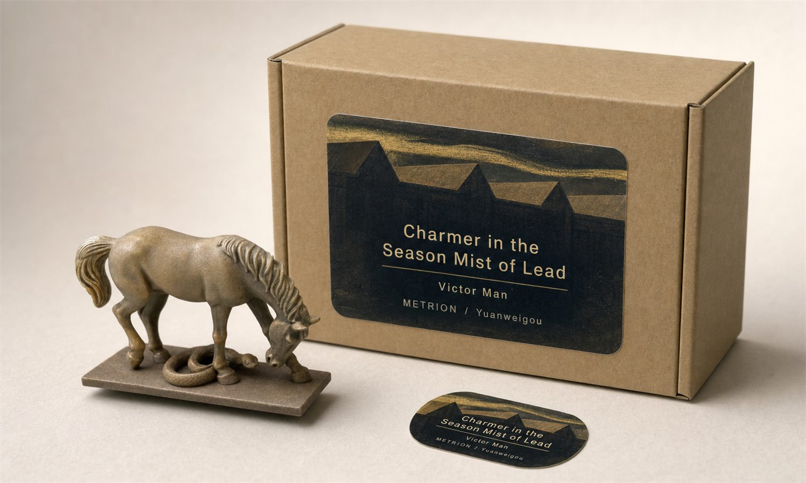
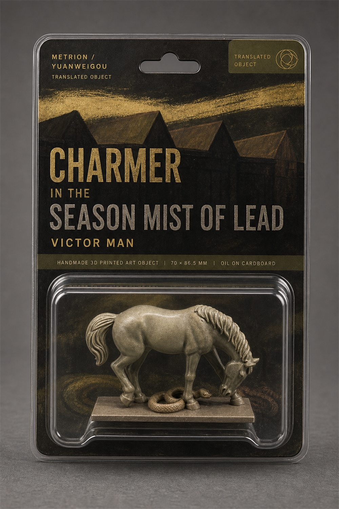
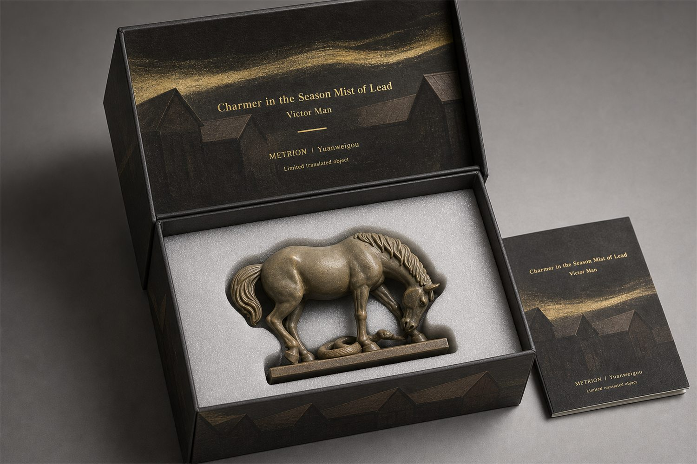

具体作品名称、媒介、尺寸与来源以完整介绍图标注为准。当前页面不替代原作版权说明，仅作为转译样本档案。
Test Series Archive
Charmer in the Season Mist of Lead
TP-2026-SGM-TS01-029｜Victor Man。本页依据本地归档重新整理介绍图、实拍图与包装方案，用于记录结构转译样本的展示状态。

Live Photos
实拍记录

Packaging
包装方案




从经典作品的构图、人物或局部形象中提取空间关系，避免简单复制原画，而是将画面中的结构张力转译为实体模型。
形成小尺寸结构模型，可包含白模、涂装版本、底座、说明卡或展示组合，用于验证作品从二维图像进入三维空间的可能性。
适合用于公共领域经典艺术的教学展示、文创空间说明、艺术史转译研究和收藏级样本展示。
如原作已进入公共领域，可作为结构转译研究样本展示；如涉及仍受保护的图像版本、摄影或出版物来源，商业使用仍需另行核验授权。
适合优先开发为研究展示、公共教育或文创测试；若进入销售，应确认图像来源、公共领域状态与再创作边界。